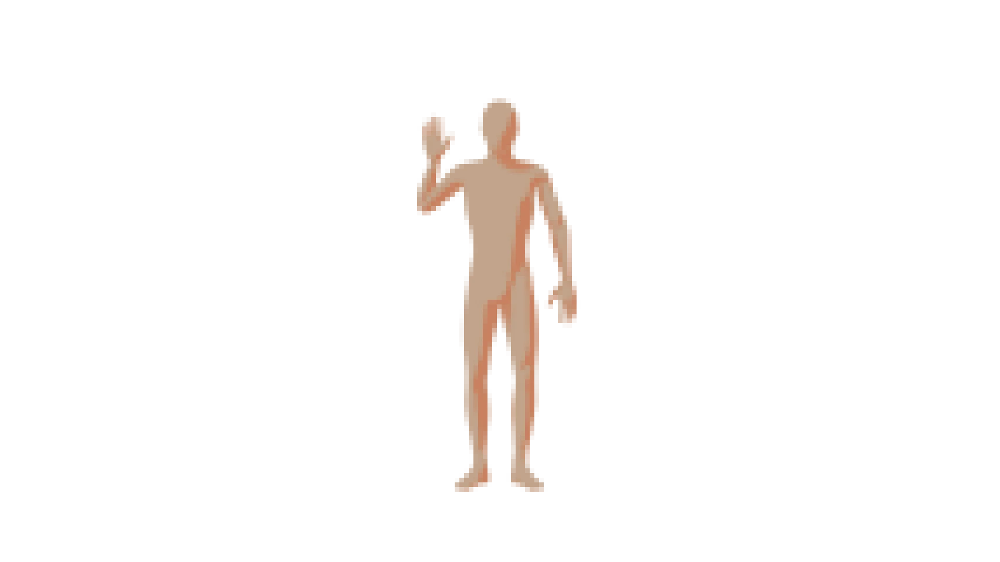
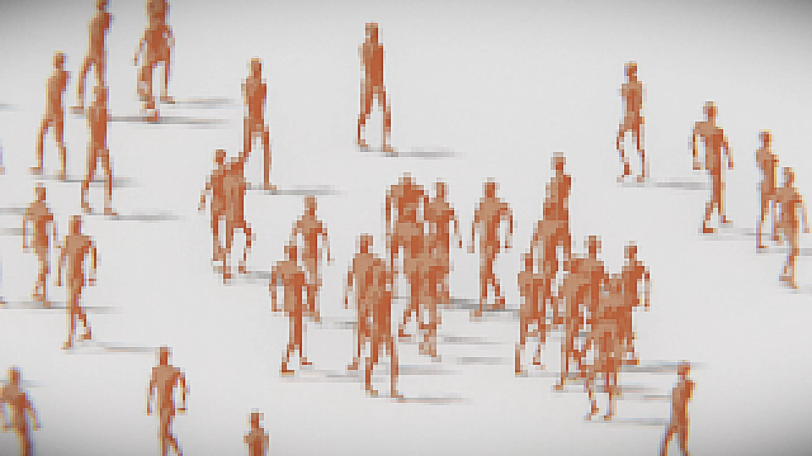
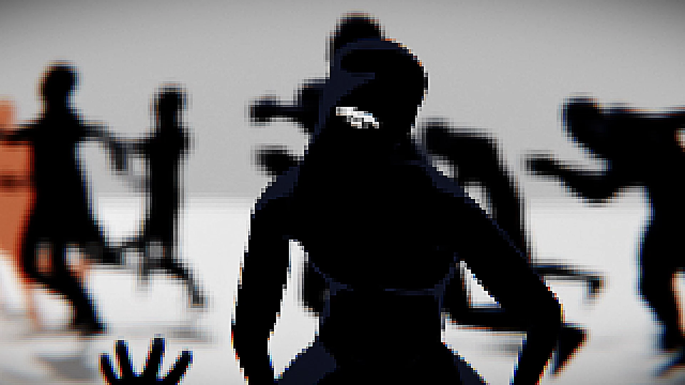
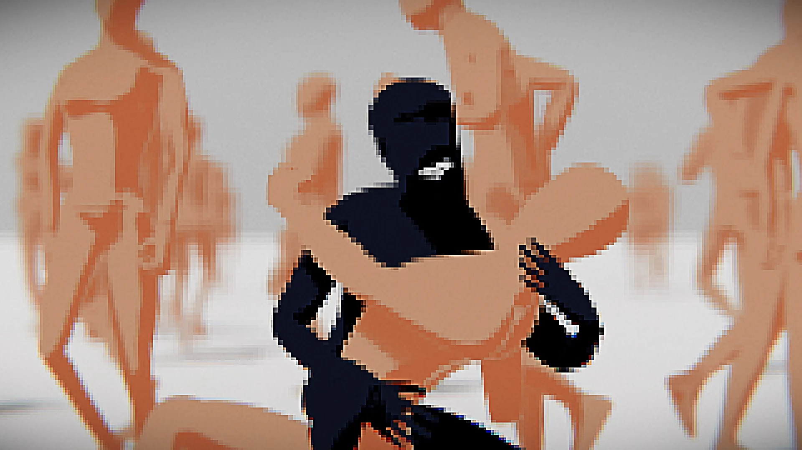
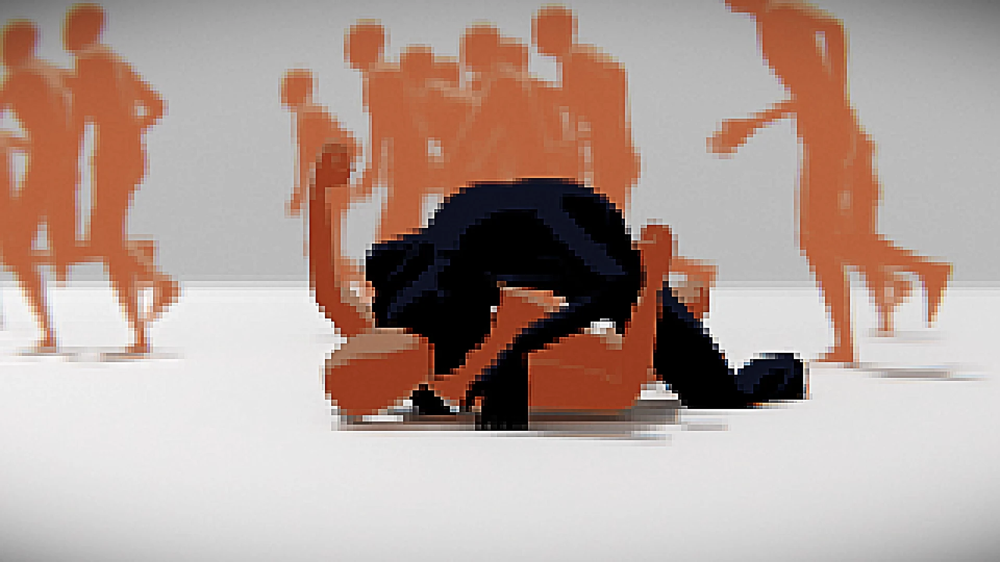
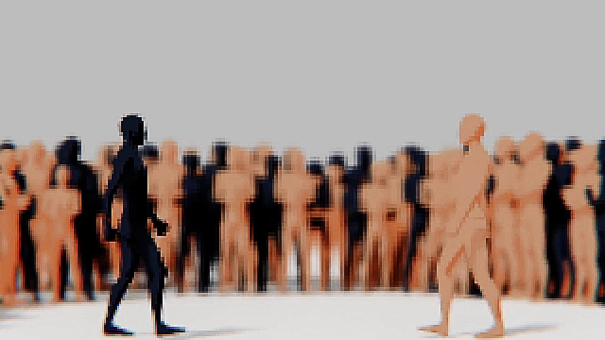
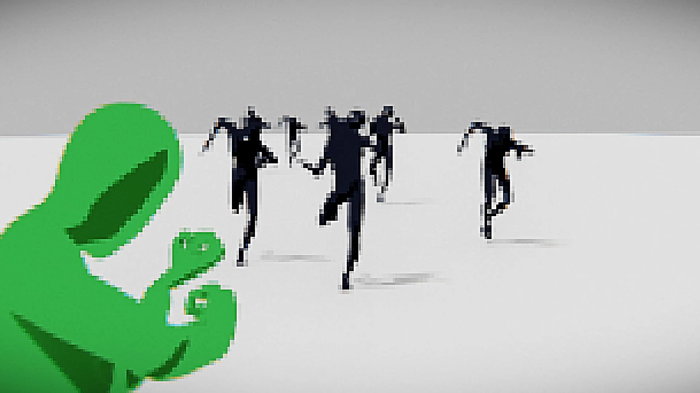
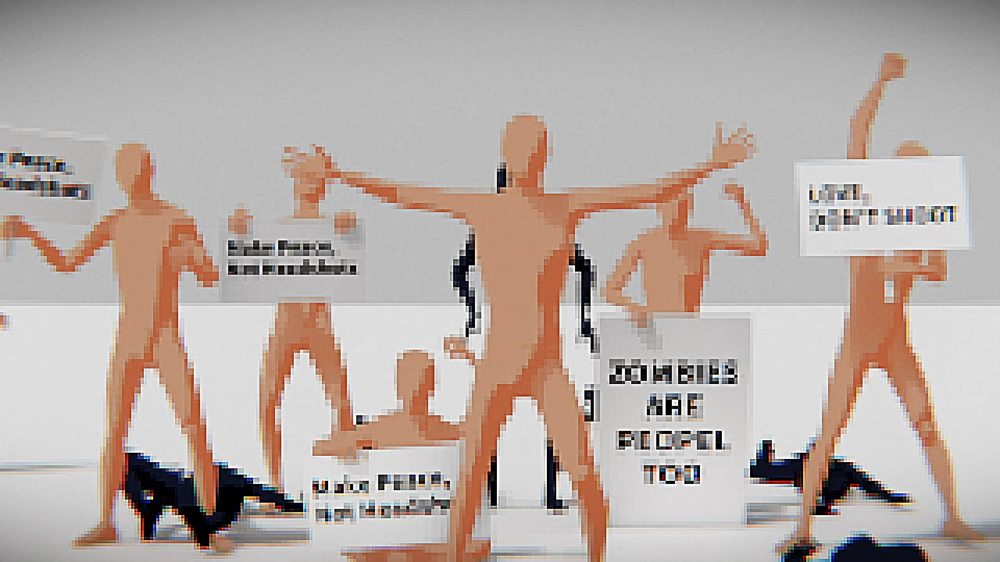
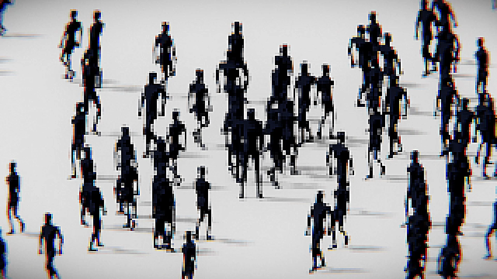

-Zombie-
좀비도 사람이 하고싶어 / Zombie wants to be
2025 / Single-channel video, color, sound / 1920 x 1080 (px), 02’ 26”
2025 / Single-channel video, color, sound / 1920 x 1080 (px), 02’ 26”
사람들은 목소리를 높이고 서로 다른 진영을 형성하며, 끊임없이 맞서는 시위를 벌인다.
누군가는 하나의 진실을 주장하고, 다른 이는 또 다른 진실을 옹호하며, 대립은 끝없이 이어진다.
이 아이디어는 한국에서 벌어진 러브버그 논란에서 출발했다. 어떤 이들은 인간에게 불편을 준다는 이유로 반드시 퇴치해야 한다고 했고,
또 다른 이들은 우리가 함부로 생명을 빼앗을 권리는 없다고 주장했다.
여기서 나는 “누가 어떤 생명이 살아야 하고 죽어야 하는지를 결정할 권한이 있는가? 단지 인간이라는 이유로 정당화될 수 있는가?”
라는 질문을 던지게 되었다.
작품 속에서 이 질문은 좀비라는 존재를 통해 다시 제기된다.
좀비는 분명 사람을 해치지만, 만약 사랑하는 이가 좀비로 변한다면 우리는 과연 그렇게 차갑게 내칠 수 있을까?
그들은 여전히 ‘인간’일까, 아니면 단순히 ‘좀비’일까? 예전처럼 사랑할 수 있을까?
이러한 질문을 통해 이 작품은 보는 사람들에게 생명과 인간성, 그리고 사회를 분열시키는 갈등에 대해 성찰할 것을 제안한다.
People raise their voices, form opposing camps, and stage protests against one another.
Some insist on one truth, while others defend another, creating endless confrontation.
The idea originated from the controversy over lovebugs in Korea.
Some argued that these insects must be exterminated because they inconvenience humans,
while others insisted that we have no right to take life arbitrarily.
This led me to ask: Who has the authority to decide which life should live or die? Is it justified simply because we are human?
In the piece, this question is reframed through the figure of the zombie.
Zombies harm people, yet if our loved ones were to turn into zombies, could we truly cast them away so coldly?
Would they still be considered “human,” or only “zombie”? Could we love them as we once did?
Through these questions, the work invites the audience to reflect on life, humanity, and the conflicts that divide society.









←